Filipe Santos
Olá! Meu nome é Filipe, Sou um Desenvolvedor Full Stack em formação na Rocketseat. Trabalho atualmente com atendimento ao cliente, e também sou o cortador na Slip Moda Praia. Estou apaixonado pela área da tecnologia, venho estudando todos os dias para manter uma consistência e absorver o máximo de conteúdo possível. Que universo mágico esse da programação, estou me dedicando ao máximo pois quero muito me tornar um desenvolvedor Jr o mais breve possível :).
Tecnologias
Atualmente eu tenho foco total no HTML, CSS e JavaScript, mas pretendo ir além e estudar o ReactJS e o Backend. Quero muito entender como funciona as famosas bibliotecas e frameworks.
Qualificações
Explorer - Rocketseat (In Progress)
JavaScript - Curso em vídeo
Iniciante em programação(trilha 01) - Alura
Inglês (Proficiency Series) - Wizard
Portfolio
-
Cadastrando um paciente e interagindo com ele

Colocando em prática todo o aprendizado adquirido até o momento no stage 04 trilha Explorer - Rocketseat. Com os ensinamentos do Maykão eu consegui desenvolver esse simples menu de cadastro interativo. O paciente pode fazer o seu cadastro digitando 1, ver seus dados de cadastro digitando 2 (caso não exista nenhum cadastro, aparecerá um alerta informando que não há dados cadastrados), digitando o número 3 o paciente poderá apagar os seus dados de cadastro (caso não haja dados cadastrados aparecerá um alerta informando que não há dados a serem apagados) e por fim o usuário poderá sair da aplicação digitando o número 4 (caso o usuário digite alguma opção que não exista, aparecerá um alerta informando que a opção digitada é inválida).
-
Desafio Space Cream
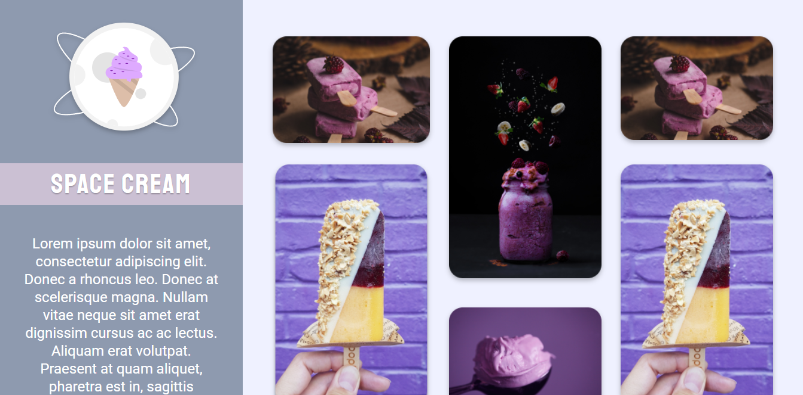Último desafio do stage 3 da trilha explorer da Rocketseat succssesfully finished. Feito 100% do zero através de um layout do figma, nele aprendi sobre mobile first, responsividade, grid layout, variáveis no css and so on \o/.
-
Responsividade projeto 01
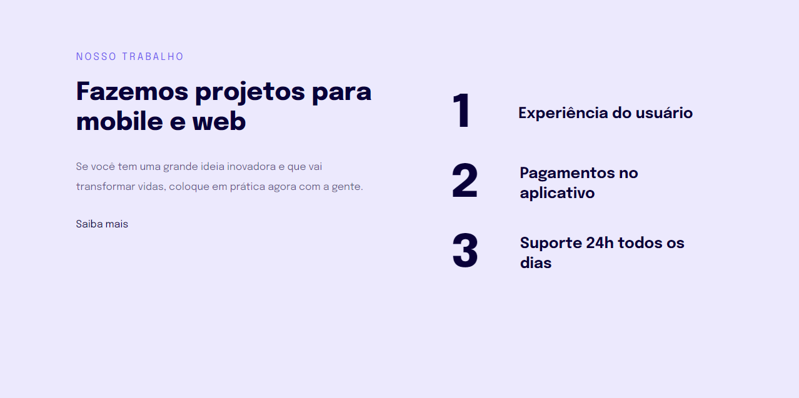Entramos na parte de responsividade, e esse foi o projeto que fizemos para nos aprofundar nesse sentido. Muito interessante a diferença do PX pro REM em um layout responsivo, a partir de agora estou dando adeus ao PX, hehe. Também vimos sobre o mobile first e a facilidade de criar primeiro layout do mobile e depois o desktop, para nos poupar tempo.
-
Formulário avançado Rocketseat

Finalizei o desafio do formulário avançado da Rocketseat, totalmente do zero através do Figma. Ficou muito lindo, tive uma ideia de usar as próprias cores da logo da Rocket nesse formulário, pois a gente poderia alterar cores e adicionar mais campos se quiséssemos. Adicionei responsividade e animações que deu um toque super bacana. Nesse módulo de formulários eu aprendi a fazer um checkbox customizado e acessível, mudar backgrounds de campos, validações e muito mais.
-
Formulário intermediário Rocketseat

One more Rocketseat challenge has been done, this time an amazing form \o/. Nesse desafio da Rocketseat, foi nos dado o layout desse formulário pelo figma, para que replicassemos o mais igual possível. E esse foi o resultado hehe. Como sempre dei uma pitada de animações, deu para treinar bastante codando.
-
Meu segundo portfolio
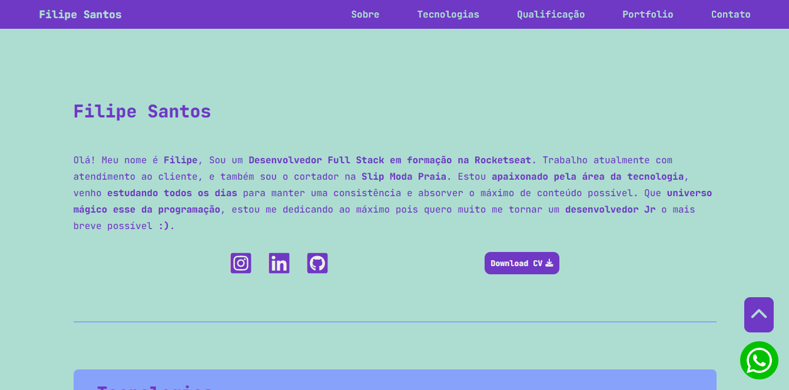Esse é meu segundo portfolio, eu queria mudar o visual do primeiro, aí coloquei a barra de navegação do jeito tradicional lá em cima. Coloquei uma rolagem suave de navegação entre as sessões, pelo JavaScript. Selecionei uma paleta de cores que combinam entre si, gostei muito do resultado ^^
-
Desafio03 Stage02 Rocketseat
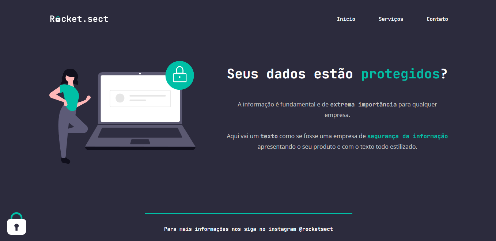Esse foi o desafio final do stage 02 da trilha Explorer da Rocketseat. Uma landing page bem lindona. Utilizamos o figma para fazer esse projeto totalmente do zero. Por fora eu adicionei animations, transitions, transformations e responsividade.
-
Desafio02 Stage02 Rocketseat
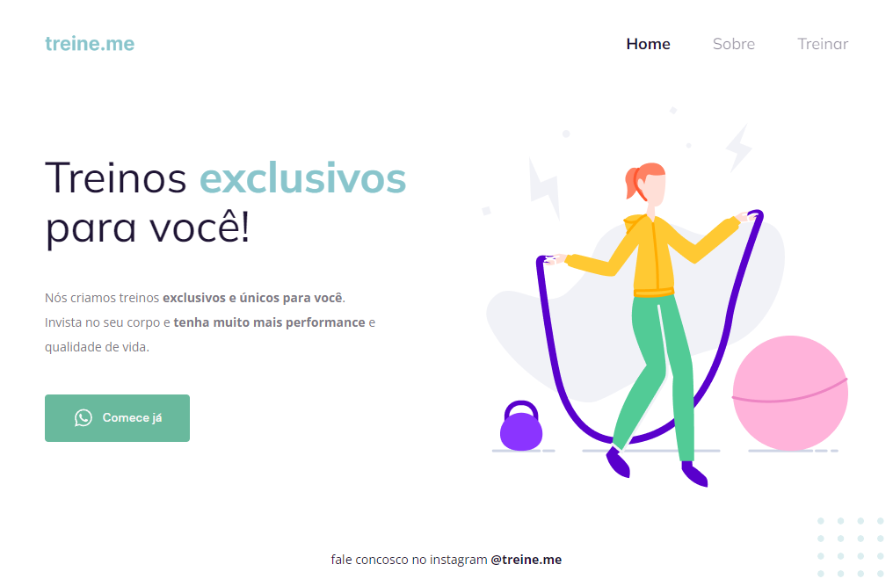Esse foi o segundo projeto da trilha Explorer da Rocketseat. Uma landing page simples porém muito bonita. Utilizamos o figma para fazer esse projeto. E o desafio foi deixar tudo certinho, pois propositalmente nos deram o projeto todo bagunçado, e tivemos que arrumar tudinho. Por fora eu adicionei animations, transitions, transformations e responsividade.
-
Desafio01 Stage02 Rocketseat
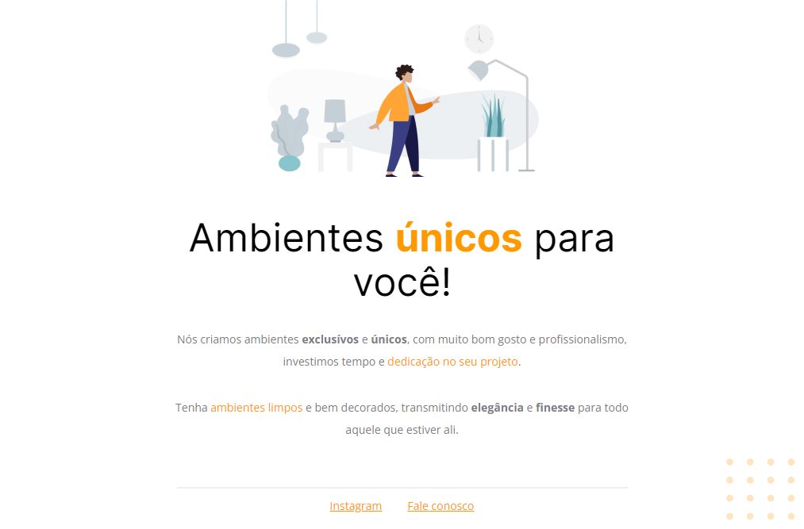Esse foi o primeiro projeto da trilha Explorer da Rocketseat. Uma landing page simples porém muito bonita. Utilizamos o figma para fazer esse projeto. E o desafio foi deixar tudo certinho, pois propositalmente nos deram o projeto todo bagunçado, e tivemos que arrumar tudinho, e esse foi o resultado ^^
-
Meu primeiro portfolio
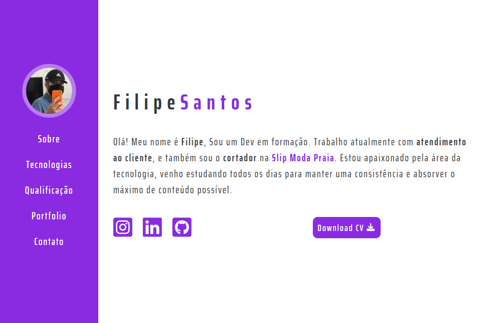Meu primeiro portfolio, construído com todo o conhecimento adquirido até aqui. Utilizando HTML e CSS, nele contém todas as informações sobre mim, e todos os meus projetos e treinamentos. Consegui praticar bastante criando-o.
-
Meus filmes favoritos
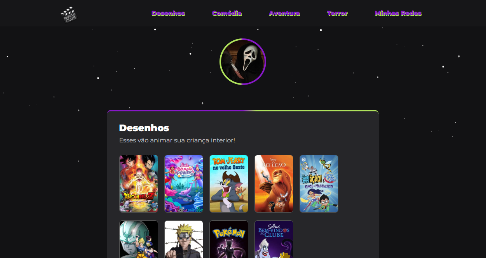Criei essa página web pra colocar os filmes e séries que eu mais curto, com um tema que os amantes de terror irão achar um máximo! Utilizei HTML, CSS e JavaScript pra fazer a rolagem suave da tela.
-
NLW eSports

Projeto desenvolvido no evento Next Level Week (NLW) da Rocketseat. Aprendi muita coisa nessa aula, animations, transitions, transformations, gostei tanto que comecei a estudar na Rocketseat ^^
-
Produtos naturais

Mais um treinamento de HTML e CSS. Fiz a primeira vez seguindo um tutorial, depois fiz sozinho várias vezes, e adicionei por fora animations, transitions, transformations e responsividade, amei o resultado final.
-
Order summary component

Meu terceiro desafio realizado com sucesso do site Frontend Mentor. Nesse projeto utilizei as imagens que o site nos fornece, e algumas especificações, como cores, font-family, etc. Amei o resultado!
-
NFT Preview card component

Nesse projeto eu repliquei o mais próximo possível o resultado final do card component! Para fazer eu usei as imagens que o site nos fornece, e algumas especificações, como cores, font-family, etc. Gostei muito do resultado!
-
Tela de Login Soraka's World
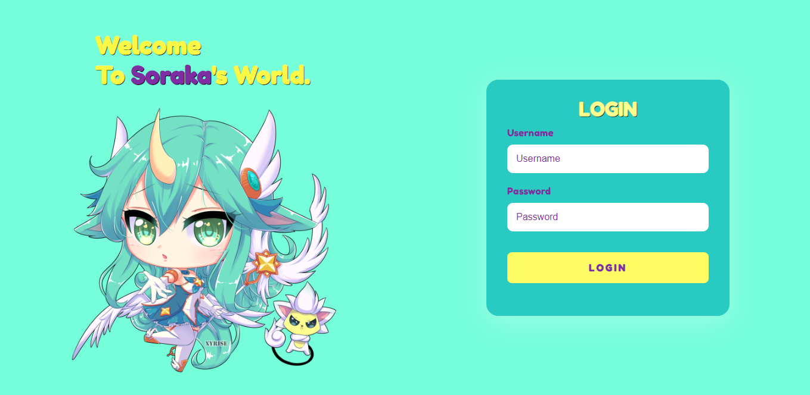Criei essa tela de login inspirada na Soraka de League of Legends, escolhi cor por cor pra terminar com esse resultado bem fofinho. O javascript estará validando as informações inseridas no input!
-
Iphone calculator
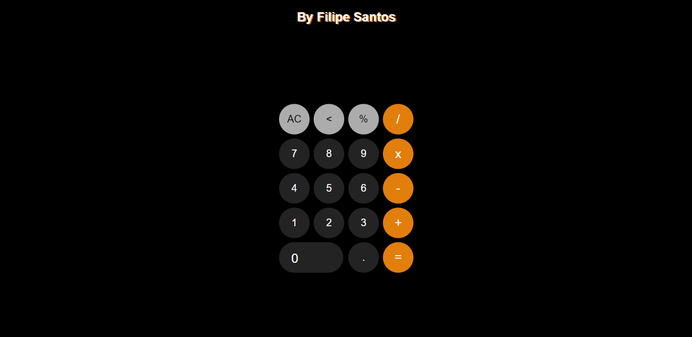Criei uma calculadora com o design da calculadora do iphone! Ficou bem parecido, gostei muito do resultado! Basicamente ela faz as mesmas funções de uma calculadora convencional :)
-
Tabuada
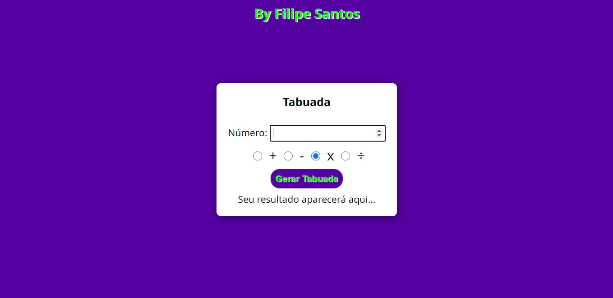Nesse projeto eu fiz do zero uma tabuada que foi o desafio do curso de javascript do curso em vídeo. Era pra ser uma tabuada simples de multiplicação, mas eu adicionei vários inputs do tipo radio pro usuário poder escolher entre qual operador aritmético utilizar na operação. Ficou muito linda e funcional!
-
Analisador de números

Nesse projeto eu fiz do zero um analisador de números, que foi um dos desafios do curso de javascript do curso em vídeo! Nela você pode adicionar números, e esse número será guardado na memória (array) , e ao clicar em finalizar, o programa fará todo o calculo e mostrará as informações aos usuários, e o javascript segue validando as informações caso seja inserido nenhum valor, ou número que já tenha sido digitado.
-
Decodificador
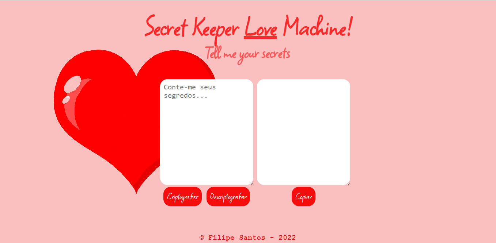Esse decodificador foi um desafio da Alura. Criei com base no que nos foi proposto, que era criptografar/descriptografar e copiar o texto com o click de um botão. As letras são substituídas da seguinte forma: "e" para "enter" "i" para "imes" "a" para "ai" "o" para "ober" "u" para "ufat". Gostei muito do resultado!
-
Tela de Login com tema dark

Construí essa tela de login com o auxílio de um tutorial no Youtube para praticar meus conhecimentos em HTML e CSS. Gostei muito do resultado, ficou incrível!
-
FoodPeeK landing page

Construí essa landing page com o auxílio de um tutorial no Youtube para praticar meus conhecimentos em HTML, CSS e Javascript. Ficou show de bola ^^
-
Spice Girls biografy
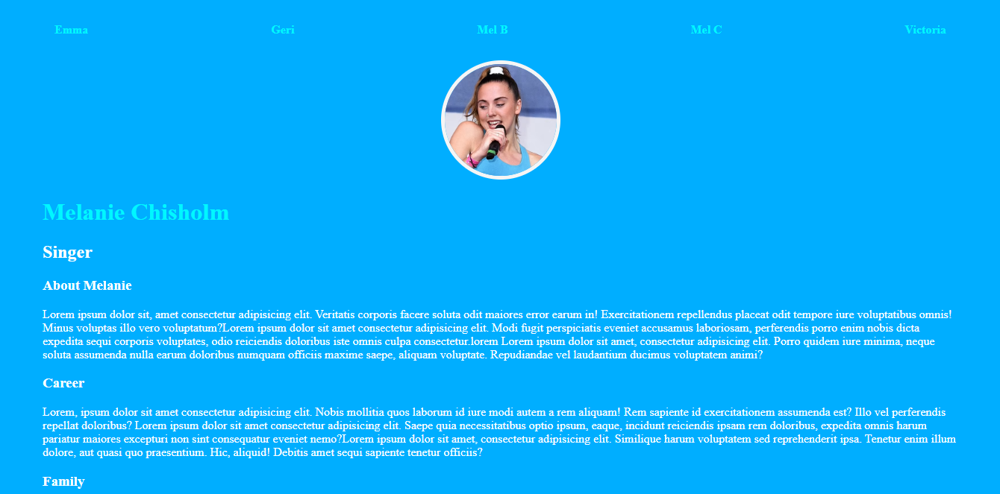About Nesse projeto simples eu criei a biografia das cinco integrantes da girl band Spice Girls. Ficou com uma cara bem legal, e foi meus primeiros passos no HTML e CSS.
-
Qr code challenge

Nesse projeto simples eu repliquei o mais próximo possível o resultado final do Qr code do site Frontend mentor! Eu fiz com base em algumas informações que o site nos fornece, como font-family, imagens e cores por exemplo. Gostei muito do resultado!
Contato
Whatsapp: +55 73 98863 4016
E-mail: FilipeSantosEstudos1@gmail.com